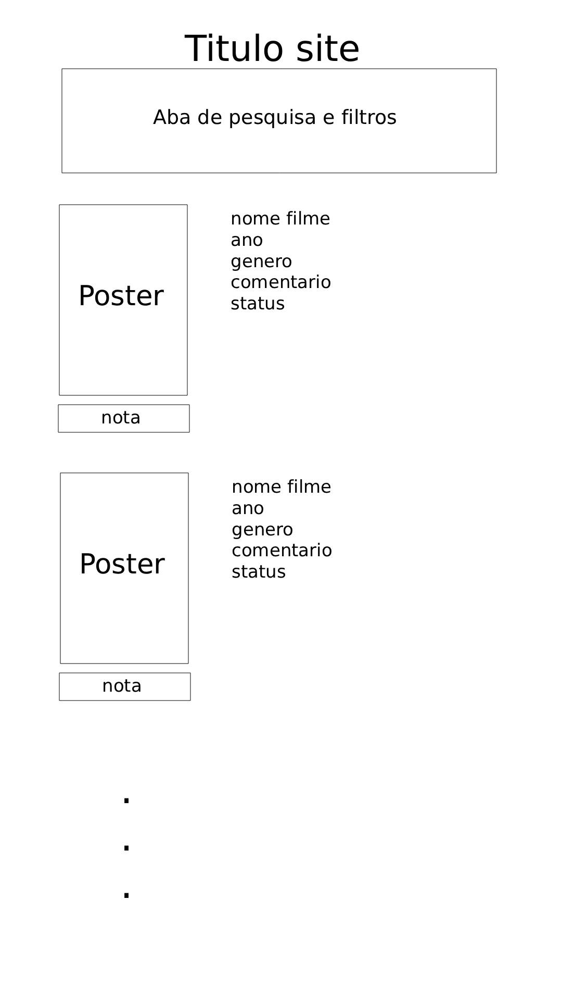

Sobre o CineTrack
CineTrack é seu gerenciador pessoal de filmes: registre o que já viu, o que está vendo e o que quer ver.
Filmes cadastrados
| Título | Ano | Gênero | Status |
|---|---|---|---|
| La La Land | 2017 | Comédia, Drama, Romance | Assistido |
| Homem-Aranha: Um Novo Dia | 2026 | Ficção Científica, Ação, Aventura | Assistido |
| Kimi no Suizou wo Tabetai | 2018 | Animação, Drama, Romance | Assistido |
| Koe no Katachi | 2019 | Animação, Drama, Romance | Assistido |
| Cidade de Deus | 2002 | Drama, Crime | Assistido |
| Gato de Botas 2: O Último Pedido | 2023 | Animação, Aventura, Comédia | Assistido |
Rascunho da Tela

Organização das Informações
Como os dados são organizados
- Título: texto identificando o filme, obrigatório.
- Ano: ano de lançamento do filme (entre 1888 e 2030), obrigatório.
- Gênero: gênero do filme, obrigatório.
- URL do poster: link para a imagem do poster do filme
- Status: situação atual do filme (Assistido, Assistindo, Quero assistir, Drop), obrigatório.
- Nota: avaliação de 1 a 5 estrelas.
- Comentário: anotação e resenha em texto livre sobre o filme.